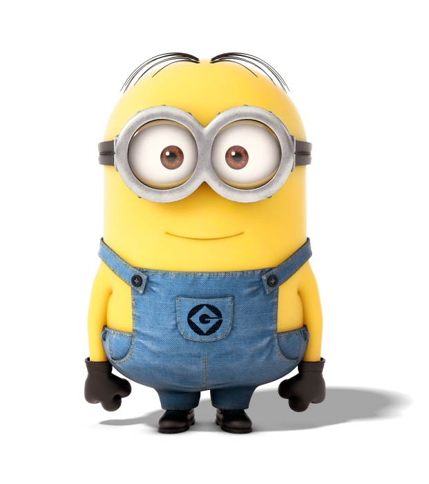
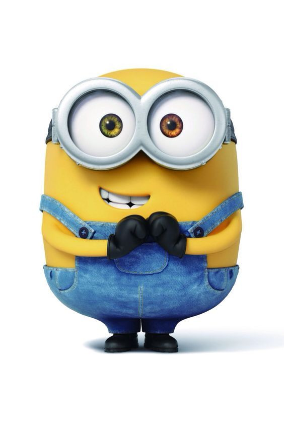
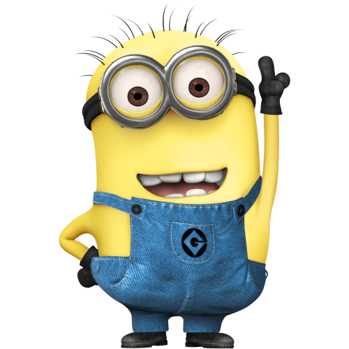

L'association

"Le bateau n'est pas une finalité,
c'est un moyen..."
L'association Passe-Coque, c'est, ..., née en 2019 dans
le Morbihan, met en œuvre l'idée toute simple
de sauver et restaurer des bateaux abandonnés
ou promis à la déconstruction, pour ensuite les
transmettre à des associations, écoles de voile ou ONG
qui permettront de favoriser l'accès à la voile
au plus grand nombre en naviguant utile à travers des projets écologiques, sociaux, humanitaires et solidaires.
Notre équipe, c'est...
Le bureau

Pierre-Jean
Président
 Jeff
Jeff
Tu vas voir !

Regis
Full stack manager

Alain
Chef des glingues
Les référents...
Le projet d'Eco-village nautique, c'est rêver plus grand.
C'est rêver d'un lieu qui interroge nos besoins en tant que plaisancier,
un lieu pour écrire de nouveaux récits autour de notre passion du nautisme.
- Où la notion de partage remplace celle de propriete
- Où l'allongement de la vie des bateaux remplace la nouveauté
- Où la transmission des savoirs et savoir-faire....
- Chantier partagé : "friendly" technicien
- Chantier d'insertion : enjeu social et sociétal
- Achat / vente de voiliers refités
- Port à sec & hivernage
- Croisières engagées
- Formations : godille, nav astro, à l'estime, météo
- Atelier Low tech & voilerie
- Ressourcerie nautique
- Bar & petite restauration
- Evènementiel
- Rally nautique